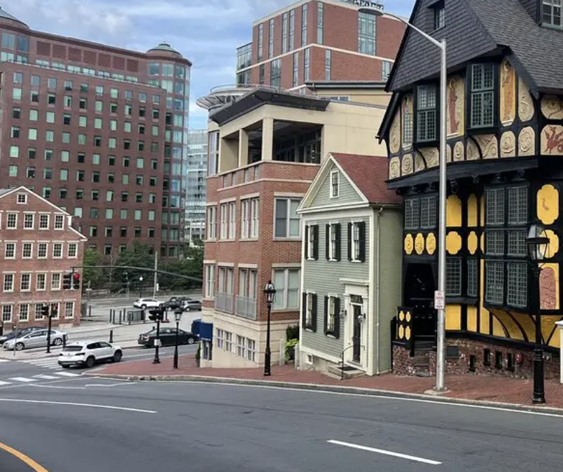

RISD Navi
An award-winning app that consolidates wayfinding, accessibility tools, and campus resources into one place — built for the RISD community in 6 hours.

A campus that's hard to navigate

The Make-a-Thon prompt asked us to solve a real challenge on RISD's campus. We kept coming back to the same friction: students don't know where things are, how to get there accessibly, or which of the many scattered resources to trust. RISD's campus is dense, hilly, and spread across multiple buildings — and the tools students rely on don't reflect how people actually move through it.
What challenges are unique to navigating a campus like RISD's?
What tools already exist, and where do they fall short?
How can we surface accessibility information that students don't know exists?
What would it look like to consolidate every campus resource into one interface?
Problems → design choices
Three different websites appear for a single search of "RISD DSS" — students don't know which to trust
Navi consolidates answers from every RISD source with links back to originals, plus a live student-and-staff document
Most students don't know about the elevator shortcut inside College Building — a key accessibility route up the hill
Navi surfaces both elevator and stairway paths with calculated times, prioritizing accessible routes by default
Apple Maps doesn't recognize "College Building" — locally-known names don't map to standard search
The app and chatbot use the names students and staff actually use, not official addresses or building codes
Not every student will know to download a campus-specific app
Proposed iPad kiosks at high-traffic areas across campus with Navi pre-installed
Key features
Wayfinding
Campus navigation built around how students actually get around.
Generates route options across different accessibility levels so students can choose what works for them
On-campus transport resources surfaced directly within the app — no separate lookup needed
Both are clearly marked on the map so routes are transparent before you start walking
Buildings are labeled the way students refer to them — not by official address or code
Accessibility Features
Designed for students who need more than the fastest route.
The app calculates estimated elevator wait time so students can plan accordingly
More accessible routes — elevators over stairs — are shown first by default
Opens the transport resource page directly, with instructions on how to call a ride
A contextual help button surfaces notes and tips specific to each route
Navi Chatbot
A 24/7 resource that knows RISD better than any single website.
Trained on a living document compiled from official university websites, staff, faculty, and student submissions
No waiting on email replies. Navi answers at any hour, and offers suggested prompts for students who aren't sure what to ask
From sketch to prototype in 6 hours
With no time to build a real backend, we trained a custom ChatGPT bot on a curated PDF of RISD campus info to simulate what the Navi chatbot would feel like in practice.
Prototype chatbot
A functional stand-in that judges could actually interact with during the presentation.
Official site content plus our own compiled tips — sourced and formatted as a PDF knowledge base
Demonstrated how a production chatbot could realistically behave, without needing to build one from scratch
Early ideation — getting the structure and key flows onto paper before touching Figma.


High-fidelity screens built in Figma within the time constraint.

What this project taught me
"It's awesome how the map shows both stair and elevator pathways. That would genuinely help me figure out when to leave for class."
Classmate S"Your project stood out because of the strength of your inspiration and reasoning. This would be a great resource for everyone on campus."
Scott Noh · Make-a-Thon Judge & Industrial Design Professor"The way you created scenarios and pain points was really successful — it put the product into real context. We'd all use this."
Classmate CTakeaway
Six hours is enough time to make something meaningful if you start from a real problem. We placed in the top 3 because the product spoke for itself — it solved something students feel every day. Strong user context and clear reasoning will always carry a presentation further than polish alone. And none of it would have happened without Celine and Hyunmin keeping the energy up through the time crunch. 💌